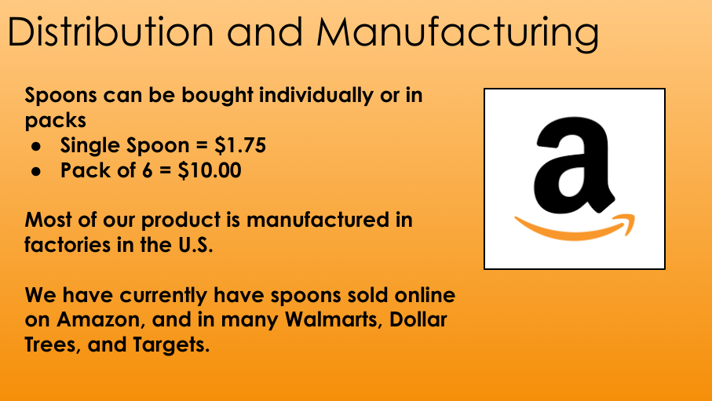

This week, we learned about how to be safe in an engineering
environment,what the engineering process looks like, and the basics of Rube Golberg machines.
Concerning safety, we learned about all kinds of protective gear,
like gloves and goggles, and how various tools are used.The engineering process,
another topic this week, consists of seven steps.
Asking a question, doing research, imagining a solution to the problem you want to solve, planning a design,
creating a prototype, testing it, and improving it based on the results. Rube Goldberg machines, another focus, are large, chain reactions made
to carry out simple tasks. We were given a project where we must make a Rube Goldberg machine that starts with a baseball,
and ends with popping a balloon. We made initial sketches of our design in our groups, and we will do more designing the following week.
We also began our websites, which is what you are reading right now.
Week 2: August 28th - September 1st
This week, we did more work on the design of our Rube Goldberg machines.
My group and I each drew sketches and then combined what we liked into one big sketch.
We then used an online program called Tinkercad to create a 3D model (to scale) of our project idea. It is
still a work in progress, but we should be able to finish it next week. We also learned about mechanical engineering, which is
one of the oldest and most broad disciplines of engineering. Mechanical engineering is present in so many different fields, like fluid mechanics,
thermodynamics, and structural analysis. It combines elements of math and physics, along with matrial science. We also did a challenge this week!
We had to use Tinkercad to create a home appliance, and we only had 40 minutes to do so. I created a bed, with a mattress,
a blanket, and a few pillows (see image). Lastly, we took a quiz about safety in engineering.
Week 3: September 5th - September 8th
This week, we finished our Rube Goldberg designs on Tinkercad. My group and I felt fairly confident about our design,
and we got to start building! We began by cutting out pieces of cardboard with a boxcutter, and taping them together.
As of now, we have assembled our first ramp, and it stands up on its own. We believe that
our Rube Goldberg Machine will end up smaller
than our 3D model, but are confident that it will pop the balloon. Our machine will be tested in a week,
and the elements we still need to add are the baseball stopper wall, the lever, and the ramp for the car.
Additionally, we took a quiz about mechanical engineering and what it entails based on what we learned last week.
Week 4: September 11th - September 15th
This week, we spent all of our class periods building our Rube Goldberg machines. It was a process full of failure, making changes,
and solving problems. The elements left to build at the start of the week were the lever, the ball stopper, and the car's ramp. We began with
the stopper, which had a lot of problems at first. It didn't have enough support and was barely anchored to the rest of our machine. We fixed
this by adding a triangular structure to the bottom of the stopper and taping it to a base plate that supported the entire machine. For the lever,
we taped a flat piece of cardboard over a triangular prism which was mounted on a cube. Thus, the ball rolled down the ramp and landed on
the lever. After this, we encountered some more challenges. The lever simply pushed the back of the car into the air, and the car would stay still.
To solve this, we added a little piece of cardboard to push the car rather than flicking it upwards. We also rounded out the bottom of the car's
resting place. This made it so that when the lever pushed the car, the resting plate would slant downward, causing the car to begin rolling. Making the
ramp was pretty straightforward, but popping the balloon with the needle (taped to the car) was surprisingly difficult. The needle kept missing the balloon or got pushed
back by the balloon. This happened during our test in front of Ms. Petrosian. The machine worked perfectly, but at the end, the needle missed the balloon,
because it was pointed too high. We used some tape to lower the needle and tested it again. And...it worked!!! This project was very fun, and I look forward
to more projects throughout the rest of the year. Below is a video of our project in action.
Week 5: September 18th - September 22nd
This week, we did two challenges. The first was a building
challenge. We were given one sheet of paper, tape, and scissors, and
had to make a flotation device to support weights (scrap metal). We selected a certain amount of weight for our flotation device,
and our goal was to have it stay supported for 5 minutes. Whoever lasted 5 minutes with the highest weight would win. For my design,
I made a small square boat/container, about 3 inches on each side. It had 1 inch walls on each side, help together with tape. I chose
a very ambitious 97.2 grams of weight, and went outside to test it. I put my boat in the crate of water, and it stayed afloat
for... 12 seconds! It starting filling with water right away, and sunk very soon after. I learned, to my surprise,
that the best design was one with a lot of surface area. Even an unfolded sheet of paper would
make for a better flotation devide than mine. The second challenge
was a designing challenge. We had to design a paper letter E, as best we could. Then, our design was given to another student to
measure and cut out exactly as written. If the design was missing measurements or didn't add up, it would show in the paper E. We
then had to grade the design we recieved out of 10. This challenge's purpose was to show the importance being meticulous and thorough with
our measurements. We also learned about computer engineering. It is a cross between eletrical engineering and computer science, and has
many applications today. Consumer electronics, robots, medical devices, and some military devices all involve computer engineering. We also got
an overview of the various parts inside of a computer (see image).
Week 6: September 25th - September 29th
This week, we learned more about computer engineering. We discussed the various parts that make
up a computer and what they do. The main circuitry is all connected by the motherboard, which is a big, flat board. On the motherboard, you will find
parts like the CPU, the GPU, and the RAM. The CPU (central processing unit) does all of the computing for the computer.
It often heats up from all this work, and thus has a heat sink near it. The GPU (graphical processing unit) does
graphical mathematics and processes
images so the CPU has less work to do. The RAM (Random Access Memory) stores short-term memory/data.
Long term storage is done with SSDs (Solid State Drives)
and HDDs (Hard Disk Drives). Peripherals are input and output mechanisms such as keyboards, mice, USB drives, (Input), audio, and video (Output).
Data is stored in units on a large hierarchy.
There are 8 bits in a bite, 1024 bytes in a Kilobyte, 1024 Kilobytes in a Megabyte,
and so on, with Gigabytes, Terabytes, Petabytes, etc. We also dissected a computer, but unfortunately, I was absent for this.
Week 7: October 2nd - October 6th
This week, we learned about bioengineering. It combines biology and various disciplines of engineering to create various products. These can include
medical devices, biofuels, and prosthetics. Our project this week focused on prosthetics. We had to use cardboard, string, and tape to
make a prosthetic hand that could pick up a water bottle. We made a 5 fingered hand (one thumb) with 3 joints per finger. Strings lined each one,
so when we pulled on all of the strings, the hand would close. All in all, it worked! However, I feel as if there was a lot of room for improvement.
It didn't have an extremely strong grip, nor was it easy to grab all of the strings at once. We also did a challenge this week. We had to design
a prosthetic for an animal on Tinkercad. I chose a horse and designed a prosthetic leg, that consisted of a hoof, a lower leg segment, a rotatable knee,
and an upper leg segment.
Week 8: October 9th - October 13th
This week, we began learning about aerospace engineering, which focuses on the design, manufacturing, and science of aircraft and spacecraft.
The two main branches are aeronautical engineering, which centers on crafts that stay within Earth's atmosphere, and astronautical engineering,
which centers on crafts that travel to outer space. Aircraft and rockets have four main forces acting open them: Thrust (goes in the direction of motion, comes from engine),
Weight (goes towards the center of the earth, is the force of gravity), Lift (goes at a right angle to the direction of motion through the air), and Drag
(goes against thrust, is like friction in the air). Some of the design discipline involved include aerodynamics, thermodynamics (temperature varies greatly in the atmosphere), and acoustics.
We will make a flying machine using a soda bottle next week, and had to make a design on Tinkercad. Mine incluced two side wings (attached to the bottle from two different points),
an upper wing, and a frontal cone.
Week 9: October 16th - October 20th
This week, we focused mostly on our bottle rockets. My partner (Liam) and I made a build that incorporated elements of both of our designs.
It featured two large, airplane style wings (one on each side), with small flaps on the edges. When we glued them on however,
they fell over, so we used pencils to support them. We also added a cardboard nose the day of testing, by using four triangles to
make a pyramid. We also had issues with the pencil on the bottom, used help the rocket slide off of its launch ramp. It was very difficult to glue
it straightly, and we kept getting glue on the pencil. However, we finally worked it out, and put the pencil on with no glue spread.
If we had more time, we would have added a second pair of wings (smaller) towards the back of the rocket. When we went to test, we added a full cup of water,
aimed it at about a 45 degree angle upward, and cranked the pressure up to
the maximum (80+ PSI). When we let it go, it shot up into the air, and then began to spin rapidly as it fell to the ground. It
landed pretty much in the middle of where all the other rockets had landed. If we could retest it, we would have angled it more forward,
and turned down the pressure just a bit.
Week 10: October 23rd - October 26th
This week, we learned about environmental engineering, which is the application of engineering and science to better the land, water, and air that we humans and other organisms need,
and to remediate pollution sites. Environmental engineers deal with various issues such as water purification, disposing of hazardous substances, and combatting air, light, and noise pollution.
Environmental science often influences policies and laws, such as the Paris Agreement, which strives to reduce global temperature by 1 or 2 degrees celsius over the next years.
We also did a challenge where we had to make a water filter using a plastic bottle. We were given pebbles, cotton balls, sand, and rocks, and had to choose the order in which we would place them in the bottle.
My partner and I put cotton balls at the bottom (where the filtered water exits the bottle), followed by sand, pebbles, and then rocks on top. We figured that it would be better to filter out the largest debris first,
then move on to the finer particles. Many other groups did this design as well. Our design worked fairly well, as it filtered out any rocks, wood pieces, and even small dirt granules from the dirty water we poured into the filter.
Even though there were no large chunks in our water, it was still a light yellow, which was the cleanest that we could get it. Another group got their water completely clear by cleaning out the filter before passing their water through it again.
This is what we would do if we could do it over. To the right is a picture of our filtration system and the water left over.
Week 11: October 30th - November 3rd
This week, we began our electrical engineering unit. Electrical engineering is the study, design, and use of appliances and equipment that use any form of electricity.
We learned about the various measurements involved in circuits, which are voltage (volts), current (amps), resistance (ohms), and power (watts). We also learned about the difference between
a series circuit and a parallel circuit. A series circuit is when the electricity flows in one big cycle, from power source to ground. Additionally, we learned about diodes. We did s
ome math for the first time this year with Ohm's law (V=IR), where V is v
oltage, I is current, and R is resistance. They only let current flow in one direction. An LED (light emitting diode) is an example. A parallel circuit is when the electricity flows in many different loops that each are grounded separately.
We then made circuits on a virtual breadboard using Tinkercad. A breadboard
is a convenient platform with various wire ports to easily make circuits and connec
t the different parts. We made a simple, one light circuit, a series circuit, and a parrallel circuit (see image). We will
build real circuits next week.
Week 12: November 6th - November 10th
This week, we began building actual circuits using a breadboard. We were given an Arduino to power our circuit, along with a resistors, LEDs, and wires.
We had to make a one-light circuit, a series circuit (3 LEDs), and a parallel circuit (3 LEDs). My partner and I were able to do this successfully! After, we had to program our
Arduino to make the lights blink in a certain pattern. We plugged wires from into pins (they provide power) in our Arduino and connected them to our breadboard. We learned code commands that could turn a LED on and off, and could make the circuit delay before doing the next command. While our code and circuit were correct, our lights still didn't light up, and we were very confused.
Here is a picture of our parallel circuit.
Week 13: November 13th - November 17th
This week, we began by continuing with our arduino circuits. We learned that we had to download the app for the circuit to respond to the code, and after doing this,
the circuits worked! We made 4 different blinking LED circuits, one of which is shown. We then learned about business in engineering. A business engineer must know a lot about both business
and technology, and be able to work with both commercial and technical teams. Some examples of the various fields a business engineer might pursue are project management, finance & economics, marketing,
and law & ethics. A business engineer must know how to effectively manage a team and their goals, and sprints along with task-based approcahes are used to do this. Our project is to make a Shark Tank like pitch of a new
product. Our group chose a spoon that heats up food, and will work out the details in the following class week.
Week 14: November 27th - December 1st
I was absent for most of this week. However, my group began working on our Shark Tank presentation, and they filled me in when I got back. We did a deep dive into our Thermo-Spoon product.
We spoke about our target audience, which is anyone who eats soup or drinks hot beverages, along with our sales (made up, of course), which were $140,000 in the last year. We included information about our cost to manufacture (75 cents), along with the price at
which we sell it ($1.75), and we then calculated our profic margins (57.4%). Overall, people liked our idea, as it would be helpful in keeping food heated, and we included an abundance of information, but there were a couple of flaws in our actual application. For example, 75 cents seemed to be
too cheap to manufacture something with a heating element, and we weren't fully sure on whether the spoon would self heat or be put in the microwave.
I was only present for four of the pitches (including ours), so I didn't have a large sample size. But, I really enjoyed the presentation about a wireless measuring device. It was not only a useful-sounding product,
but the presentation provided all of the necessary information along with a detailed digital rendering of what their product would look like. Some sample slides from our presentation are pictured below.

Week 15: December 1st- December 20th
What was the weight of your bridge? Our bridge weighed 46 grams.
What was the weight held by your bridge? Our bridge held 2035 grams of water.
What was the ratio of weight of bridge to weight held? The ratio of bridge weight to weight held was 1:44, meaning that our bridge held 44 times its own weight.
What was the heaviest part of your bridge? What contributed most to the weight? Our bridge was weighted fairly evenly. The only areas that may have been a little heavier were the points on the base about 4 inches in from the edges. We reinforced the pasta here, as we were going to hang our bucket from these two points.
Where did the design of your bridge come from? Inspiration? Research? The research we did showed that trusses were an effective way to make a stable bridge. We also realized (from building our first bridge) that a shorter bridge is sturdier than a taller bridge, and that a triangular shape is more stable than a square shape. This is how we came up with our second bridge design.
Did the design work as intended? Better? Worse? The design did work as intended. It held a good amount of water for its weight (3rd place!), and the triangular design (instead of a square design) made the bridge sturdier all around.
What was the point of failure of your bridge? Was that the expected weakest point? After there were 2035 grams of water in the bucket, the bridge broke at the two points of contact from the bucket. We expected this, as these two points would have to support the weight of the water (which is why we added reinforcements).
What can you do to improve your bridge? What can prolong points of failure? To imporve it, we could have reinforced our bridge even more, with more spaghetti on the main rods running across the entire bridge. This would allow the points of contact to withstand more weight.
Below are pictures of the building process (top left), the bridge when it was finished (bottom left), the bridge after testing (top right), and the testing video for our OTHER bridge (the one that fared worse) (bottom right).
This week, we began our unit on chemical engineering. A chemical engineer is similar to a chemist in that they both have a good knowledge of chemical reactions and processes. However, Chemists
typically focus on small-scale experiments in labs, while chemical engineers typically focus on designing systems for large-scale reactions. This incluedes safety equipment, temperature sensors, controls, and valves, which are all needed to make a large scale reactor system function.
There are various fields and applications of chemical engineering, including metallurgy, natural gas refinement, mineral processing, molecular engineering, nanotechnology, food development, and a lot more. Chemical engineering uses a lot of science principles
that are fundamental in other disciplines of engineering, such as fluid mechanics, thermodynamics, and material science. For our project, we had to make ooblek (see image). We were given 3/4 cups of cornstarch, and had to add the appropriate amount of water to achieve the desired consistency.
My partner and I slowly added the water, mixing between additions, until we reached the correct consistency. Our ooblek was slighty liquidy, but was solid when punched, and "melted" when held. We also added red food coloring to give it a fun hue.
Week 2: January 16th - January 19th
This week, we began work on a long-term project. My partner an I will need to create a functioning car that is powered/controlled by an Arduino board. We had to fill out a project proposal, which consisted mainly of our research.
Our car will feature an Arduino board connected to a motor driver, which is linked to two motors. A stepper motor controller will be used to recieve signals from the Arduino and transmit them to the motor. Each motor will control a wheel, which will make the car move. An ultrasonic sensor will be placed atop the car to detect obstacles in the way. When the car sees an obstacle, it should turn in a different direction.
All of this will be achieved by programming the Arduino, which uses the C++ language.
Week 3: January 22nd - January 26th
This week, we began the design phase for our Arduino car. We made a Tinkercad for our car, and the design is as follows: The chassis will be a carboard rectagle that is 4 in. by 10.5 in. The underside will feature two motors towards the front, one on each side, and each motor will be connected to a wheel. Atop the cardboard will sit a breadboard, which will be used for all of our wire connections. On top of the breadboard, at the back end, will be our Arduino, which we can secure with tape.
Batteries will also be attached to the underside of the car, and connected to the breadboard with wires and battery clips. Our biggest risk is our back wheel. At the very back of the cardboard rectangle, there is a section cut out in the middle 2 of 4 inches. Here, we will put a CD, connected to a dowel (serving as the axle). Our stepper motor controller will be in the middle of the breadboard, along with a large amount of wires. Here is a photo of our tinkercad.
Week 4: January 29th - February 2nd
This week, we began wiring the Arduino to the breadboard. We were provided with a very helpful resource on how to wire an Arduino with a stepper motor controller, along with what each pin in the motor controller does. This made the wiring proccess very easy. The same resource
also provided us with some sample code that we could use. However, the wheels did not move. We then found out that we were only supposed to put some of the code to make the wheels move, and another group assisted us in cutting down our code. Still, the wheels did not move. We then began wiring just one motor up to the Arduino, taking out all of our previously placed wires. We were again unsuccessful
in getting our wheel to move. After another group consulted with Mr. Poole, they informed us that the Arduino did not have enough power on its own to move the wheel. We needed to attach our battery. After doing so, the wheel spun correctly, but the two were not perfectly in sync. We also had to deal with the sodering jobs of each wheel falling off all the time. Here is a picture of our progress.
Weeks 5 & 6: February 5th - February 9th, February 13th - February 16th
Over these two weeks, we continued on with the Arduino process. We worked on both the electrical and mechanical aspects of the car. We cut out a cardboard body much larger than our first one. We wanted more space to attach all of the electrical equipment to the car.
It was a bit difficult to attach the motors to the bottom of the car with tape, but we were able to do so. After attaching the back wheel, we began running some tests. The car drove, but turned severely, even when it was programmed to go straight. After consulting with another group,
we realized that the slack in the wire that connected the chromebook to the arduino might have affected the car's path. After remedying this, the car still didn't go straight. We also attached our wheels with zipties insterad of tape to hold them more securely. While this was a great idea, as
the stability of our wheels increased greatly, we are still having trouble making the car go straight. We decided to remove the back wheel, as it kept flopping around in the back and prevented the car from moving in a straight line. We made it so the back of the cardboard just drags on the ground.
We also ended up redoing our zipties, making sure that they were perfectly lined up with the edge of the car. With the wheels on straighter this time, the car went almost perfectly forward. We then adjusted the turn time to make the car turn 90 degrees, instead
of too much or too little. This put us in a good position to test, the next step in the process. Here are some pictures of our progress over these weeks.
Week 7: February 20th - February 23rd
This week, we were tested our Arduino car!! We went to the cafeteria to test it, but right before it was our turn, the zipties holding the wheels broke off. We tried to reattach them, but the car wouldn't
go straight like it previously had done. This was an annoying inconvenience, but we knew that the car had worked before. In the classroom, we reattached the zipties and tested in there. The car traveled as it should have,
but it was difficult to track its motion due all of the obstacles. Overall, we had a functioning car, and testing was a success! With more time, we would definitely have implemented a better back wheel. A ball bearing would have
been ideal, but a well put together CD wheel/axle would suffice too. We also would have coded in an ultrasonic sensor. This would have allowed the car to detect obstacles and turn in response.
Week 8: February 26th - March 1st
This week, we began a new project: The Egg Drop Challenge. We will have to make a container to hold an egg and keep it intact after dropping it from a 3-story building. Our
design consists of a cardboard base, with a popsicle stick pyramid encasing it. The carboard will be lined with cotton balls, on top of which will sit our balloon. The egg will then be taped to the balloon.
We will use a trashbag as a parachute on the top. We think that the parachute will make the contraption fall slower, and that the cotton balls and balloon will absorb a lot of the impact. We also did a challenge
this week. We had to go around the school and count if there were more doors or wheels. I was in the doors group, and we counted roughly 22000 doors. We defined door as anything that rotates on an axix to give one access to something.
Thus, this includes chromebooks, the seats in the auditorium, air-pod cases, eyes, and mouths, along with the regular doors in each building.
Week 9: March 4th - March 8th
This week, we continued building our egg drop contraption. It is almost finished. We added the balloon, and a cardboard shell at the top of the popsicle-stick pyramid. The hardest part was tying up the parachute.
We had to make sure that every string was even, and they kept getting tangled up. After attaching it, we went to test it outside (without and egg). It was a little bit uneven, and even though the parachute slowed the fall,
the device fell completely upside down. We don't think the egg will break if it were to fall this way, but we plan to add more weight to the bottom, to ensure a more even drop. Doing this, along taping the egg to the balloon, is all that
we have to do. We also did a challenge this week. Everyone was given one sheet of printer paper, and had to make it into something that would go the furthest when thrown off of a three-story building. I made a sleek paper airplane,
with a pointy nose and a slender body. The wings were an uninterrupted diagonal, that met at the point of the airplane. The goal was to make it very aerodynamic. When I threw if off of the building,
it went straight, but fell more than it went forward. I attribute this to a lack of weight, which didn't allow it to cut through the air. The winner simply crumpled up their paper into a ball and threw it, supporting this theory.
Week 10: March 4th - March 8th
This week, we began with another challenge. We had to make a device that could hold a water balloon to the end of a meter stick. To test, we would run 100 meters and see if the balloon fell off. My partner and I made a clamp-like device out of popsicle sticks and rubber bands. When it was pulled open,
it could be slipped over the balloon and under the meter stick. When the top was let go of, it would hold the balloon tightly, due to the slack of the rubber bands. When we tested it, the balloon didn't even come close to falling off! With more time, we would have added more security measures to hold the balloon in place.
We also tested our egg drop device. My partner held it by the parachute and dropped it from the balcony. It fell a bit unevenly, falling on its side after the initial impact. However, the egg didn't break. This is probably because it was tightly taped to the balloon, along with cotton balls lining the where it was attached.
Also, we had carboard triangles on each side of the pyramid in case it fell on its side, like it did during testing. This was important in protecting our egg. With more time, we would have made the project smaller on the bottom, so it would be less likely to land in an uneven way. Here is a picture of the water balloon device, and a video of the egg drop testing.
Week 11: March 26th - March 29th
This week, we began another project. Our challenge was to build a flotation device that would be able to travel the entire length of a 5 meter gutter. We had very limited materials, and had to be exact in how much of each of the supplies we
were requesting. our design features a plastic cup cut in half, and put together with the top rims touching to make a boat shape. We then attached popsicle sticks together with rubber bands as masts, and tapes these to the boat. We attached a sail to each mast with tape and a toothpick, one sail made out of
printer paper, the other out of a tissue. My partner and I each get to blow the boat two times, and we hope that this will be enough to make it go the full distance. We also had to take a few restrictions into account. The gutter is 8 centimeters wide, so we had to be mindful of the width of our boat.
After measuring, it was 7.6 centimeters wide, so it should be able to traverse the gutter. We also were only given 6 inches of tape. To conserve it, we cut it vertically into thirds, so we had 3 6-inch strips that were thinner. This helped us attach everything that we needed to, and we had
no tape left at the end. Here is a picture of our design.
Week 12: April 1st - April 5th
This week, we continued working on our gutter boat. We attached the cups halves to one another, and added the sails. We were fortunate enough to get the chance to do a prestest, so we
went outside to the gutter and tested it. The boat flipped over almost instantly. We went back inside and redid our sails with only paper (omitting the paper towel). After another pretest, it still fell down.
We decided to keep only one of our sails and put it in the middle of the boat. After testing it, it stayed up, and, with some blowing, traveled the entire gutter. When we tested it, it lived up to its expectation and went fully across.
My partner and I learned that the higher the sail stuck into the air, the more unstable our boat was. This was a key discovery in the refinement process. If we could've redone it, we would have made stronger boat base, and made lower, more effective sails.
This picture is of our boat's final iteration, and this video is of our test.
Week 13: April 8th - April 12th
This week, we began with a challenge. We were given 15 post-its and had to build a bridge. My group and I cut each post-it into 12 segments, with a bit of the sticky side in each segment. However,
we did not fully cut through the end of the post it, except at the very beginning and end of each post-it. We folded back each incision to create a strand about 30 inches in length. We predictec the bridge to be about 36 feet and 4 inches,
and it was 36 feet and 7 inches. We then began a new project. We were going to be put in groups, and we would have to build a boat with cardboard and duct tape that would be able to travel twice the length of the school pool with two people in it.
After some research, I found that the more duct tape touching water than cardboard, the better. Also, a wide-bottomed boat is good for flotation, but a thin-bottomed boat is better at moving through the water. I decided to go with a wide boat with a flat bottom.
It is diamond shaped, with the point at the front, and had tape covering the bottom and the seams. Below is a picture of the post-it bridge and the boat Tinkercad. In the Tinkercad, red represents cardboard, while yellow represents tape.
Week 14: April 15th - April 19th
This week, we agreed on a design for our group. Our boat will consist of a wide bottomed boat with a triangular tip. The front tip area will tilt upwards, and the back will be straight like a rectangle. We
found a big piece of cardboard that we were able to fold to serve as the base. We folded it upwards to make the tip at the front of the piece. Having one smooth piece of cardboard on the bottom as opposed to seams should help us keep our boat together.
So far, while we are mostly adhering to the dimensions of the tinkercad, we made the boat a bit smaller, as we realized that the two riders (one of which is me) could fit in less space than we initially thought.
Our next steps are to build the shell of the boat. We need to build the walls, reinforce the floor, and begin taping. Here is a picture of our group design.
Weeks 15 & 16: April 22nd - April 26th, April 29th - May 3rd
Over these two weeks, we continued working on our boat. We made many important developments in various areas of the building process.
First, we started by building the walls. We already had a small wall of about 3 inches, from the folding from the previous week. We attached our new walls to
the inside of the boat, which were about 15 inches tall. We made sure to tape the wall both from the outside and the inside to ensure a watertight seal. One method which we found particularly effective was
stitching. We would cut a hole through the wall we wanted to attach, and fed a piece of tape through the hole. We then pulled it through tightly, making the carboard very strongly attached. We also added a back wall of about the same height
as the side walls. The side walls were reinforced with taller pieces of cardboard and more stitching later in the week. Lastly, we taped another piece of cardboard over the majority of the floor of the boat, to make it more rigid.
We think that our boat will be able to withstand the water, especially after calculating that the water is expected to reach 4 inches up our boat. Here are some pictures
of our progress throughout this two week period.
Week 17: May 6th - May 10th
This week, we continued to work on our boat. One step we took was reinforcing our tape and smoothing it out, to make sure that the cardboard pieces didn't come apart. We made sure to line the seams thoroughly with tape, as these
areas will be the most vulnerable to water. We also added a third layer to the floor, to further the structural integrity. One trouble spot for us was the front of the boat, which wasn't very tall and was open at the top.
To fix this, we added a cardboard triangle to cover up the front of the boat, along with lining the inside with cardboard. The 3-layer floor didn't extend to the front triangle of the boat,
so this was a much needed development. Next week, we plan to make an effective paddle along with reinforcing any trouble spots in our boat. Our biggest concern right now is that we will run out of tape. Our supply is running low, and we want to make srue that we can effectively seal the every vulnerable area of the boat, and save
some tape to make paddles. We expect to finish our boat within two class periods.
Weeks 18 & 19: May 13th - May 17th, May 21st - May 24th
This was an eventful two week period. One challenge we did was to build a marble roller coaster entirely out of printer paper and scotch tape.
The coaster needed to have three curves or loops, along with one of those loops going upside down. We started our design by making 20 symmetrical paper pillars to provide a
two story foundation for our coaster. We followed this by making curved ramps, by making slits on one side of a piece of paper, and folding them over with tape. This worked very well, and the
marble rode the curves fantastically. We also added a spiral drop, along with zigzag ramps. With little time left, we hadn't attached the upside down loop. We began building up with paper tubes so the marble
could build up speed, and the loop on top of a support beam. However, the marble kept getting stuck. Finally, after adding two last-minute support tubes, we got the marble to ride the loop, completing the roller coaster
at the last second. This was by far the biggest struggle, as we almost couldn't finish before our time was up. With more time, we would have made more pillars, to build our foundation up to three or four stories.
This would have allowed us to add the upside down loop more methodically, with less haphazardly made supports.
The main event of this week, however was testing our cardboard boats. We had worked on them for almost a month, and were unsure of how we would fare in testing. My partner and I
got into the boat smoothly, supported by Mr. Poole. Once we had straigtene our boat out, we began moving at a pretty good speed. However, my paddle was not holding up, and my partner and I
almost tipped the boat many times due to shifing our weights. I had to act as a counterweight at one point to prevent the boat from tipping. About halfway across the pool, our boat began filling
up with water, and the bottom was starting to disintegrate. A couple seconds later, the back fell into the water, and my partner and I had to swim the wet boat to the edge of the pool. With more resources and time,
we would have focused on making the boat less flimsy. While the walls and floor were reinforced by multiple layers of cardboard, they still didn't stay strong during the test. Additionally, we definitely would
have used more tape had it been possible. If we could have covered the entire boat with tape, it probably wouldn't have deteriorated as quickly. We also would have made the walls straight up, as opposed to leaning outwards, to make the
boat even sturdier. Overall, I have really enjoyed this class. It has allowed me to be creative during the school day, and work with many new people. My biggets takeaway is the importance of trial and error. During so
many different projects, I would always end up deviating from my design, as a problem, hurdle, or dimensions issue would arise. This forced me to devise an innovative solution while still abiding by the resource constraints. By
experimenting, I was able to get around obstacles throughout each project. Below are videos of one of our successful roller coaster trials and our boat test.